7.1 Introducción al Aprendizaje Estadístico
Este apartado es una adaptación (reducida, pensada para 2 sesiones de 2 horas) del Capítulo 1 de Fernández-Casal, Costa y Oviedo, Métodos predictivos de aprendizaje estadístico, que se sigue empleando como referencia completa para quien quiera profundizar (incluye, entre otros contenidos que aquí solo se tratarán brevemente por falta de tiempo, un desarrollo más completo de la maldición de la dimensionalidad y del paquete caret).
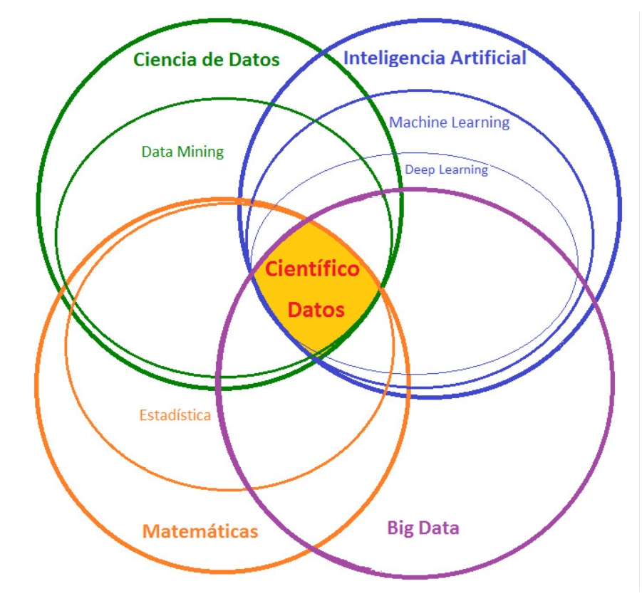
La denominada ciencia de datos (data science) se ha vuelto muy popular hoy en día. Se trata de un campo multidisciplinar, con importantes aportaciones estadísticas e informáticas, dentro del que se incluyen disciplinas como minería de datos (data mining), aprendizaje automático (machine learning), aprendizaje profundo (deep learning), modelado predictivo (predictive modeling), extracción de conocimiento (knowledge discovery) y también el aprendizaje estadístico (statistical learning). Puede resumirse en el diagrama de Venn de la ciencia de datos de Drew Conway (Figura 7.1).
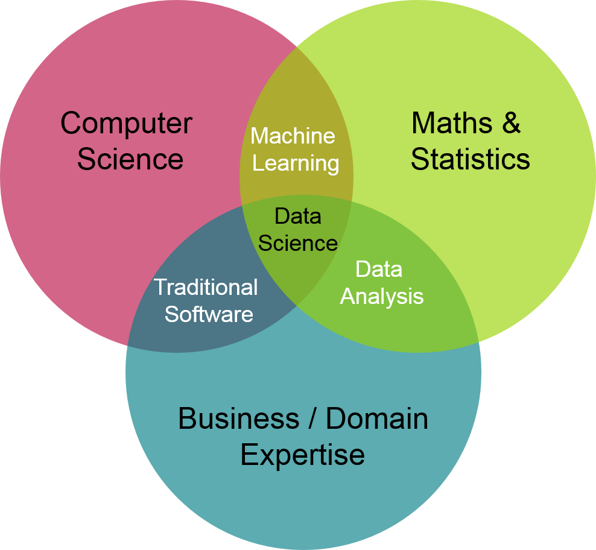
Figura 7.1: Diagrama de Venn de la ciencia de datos
Podemos definir la ciencia de datos como el conjunto de conocimientos y herramientas utilizados en las distintas etapas del análisis de datos (Figura 2.1), incluyendo la gestión, obtención y manipulación de los datos (ver Capítulo 2).
Una de estas etapas es la construcción de modelos, a partir de los datos, para aprender y predecir. El aprendizaje estadístico (AE) se encarga de este problema desde un punto de vista estadístico: se consideran modelos estocásticos (con componente aleatoria) para tener en cuenta la incertidumbre debida a no disponer de toda la información sobre las variables que influyen en el fenómeno de interés.
En la inferencia estadística clásica se trata de explicar por completo lo que ocurre en la población y, suponiendo que esto se puede hacer con modelos tratables analíticamente, emplear resultados teóricos (típicamente asintóticos) para realizar inferencias, incluida la predicción. Los avances en computación han permitido el uso de modelos estadísticos más avanzados, principalmente métodos no paramétricos, muchos de los cuales no se pueden tratar analíticamente (o no por completo): este es el campo de la estadística computacional, en el que se enmarcaría el AE.
Cuando pensamos en AE, pensamos en:
Flexibilidad: se tratan de obtener las conclusiones basándose únicamente en los datos, evitando asumir hipótesis para poder emplear resultados teóricos. La idea es “dejar hablar” a los datos, no “encorsetarlos” a priori.
Procesamiento automático de datos: el proceso de aprendizaje puede realizarse con la menor intervención interactiva posible por parte del analista.
Big data: en sentido amplio, no solo tamaño muestral, también datos complejos o con necesidad de alta velocidad de proceso.
Predicción: el objetivo (inicial) suele ser únicamente la predicción de nuevas observaciones, con métodos que son simples algoritmos.
Por el contrario, muchos de los métodos del AE no se preocupan (o se preocupan poco) por:
Reproducibilidad: pequeños cambios en los datos pueden producir cambios notables en el modelo ajustado, aunque no deberían influir mucho en las predicciones. Muchas técnicas son además aleatorias, por lo que el resultado puede depender de la semilla empleada.
Cuantificación de la incertidumbre: se obtienen medidas globales de la eficiencia del algoritmo, pero resulta complicado cuantificar la precisión de una predicción concreta.
Inferencia: aparte de la predicción, la mayoría de los métodos no permiten realizar inferencias sobre características de la población (como contrastes de hipótesis).
Además, esta aproximación puede presentar diversos inconvenientes: algunos métodos son poco interpretables (“cajas negras”), pueden aparecer problemas de sobreajuste (overfitting, ver Sección 7.1.3) y pueden presentar más problemas al extrapolar o interpolar que los métodos clásicos (cuanto más flexible el algoritmo, más cuidado hay que tener al predecir en observaciones alejadas de la muestra empleada en el ajuste).
7.1.1 Aprendizaje estadístico vs. aprendizaje automático
El término machine learning (ML; aprendizaje automático) se utiliza en inteligencia artificial desde 1959 para referirse, fundamentalmente, a algoritmos de predicción. Muchas de sus herramientas provienen de la estadística, que es la base de todos estos enfoques (conviene no perder la base formal). Por ello, desde la estadística computacional se introdujo el término statistical learning (aprendizaje estadístico) para referirse a este tipo de herramientas, pero desde el punto de vista estadístico (teniendo en cuenta la incertidumbre debida a no disponer de toda la información).
Tradicionalmente, ML no se preocupa del origen de los datos; incluso es habitual considerar que un conjunto enorme de datos equivale a disponer de toda la información (la población). Por el contrario, en AE se trata de comprender, en la medida de lo posible, el proceso subyacente del que provienen los datos y si son representativos de la población de interés (si tienen algún tipo de sesgo, especialmente de selección).
7.1.1.1 Las dos culturas
Breiman (2001), en su célebre artículo Statistical modeling: the two cultures, diferencia dos objetivos en el análisis de datos, información (en el sentido de inferencia) y predicción, que dan lugar a dos culturas:
Modelización de datos: desarrollo de modelos (estocásticos) que permitan ajustar los datos y hacer inferencia. Es el trabajo habitual de los estadísticos académicos.
Modelización algorítmica (predictiva): no está interesada en los mecanismos que generan los datos, solo en los algoritmos de predicción. Es el trabajo habitual de muchos estadísticos industriales y de muchos ingenieros informáticos. El ML es el núcleo de esta cultura, que pone todo el énfasis en la precisión predictiva (de ahí el papel dinamizador de competiciones entre algoritmos, al estilo del Netflix Challenge).
7.1.2 Métodos de aprendizaje estadístico
Dentro del AE se suelen diferenciar dos grandes bloques. El aprendizaje no supervisado comprende los métodos exploratorios, en los que no hay una variable respuesta explícita, y cuyo objetivo es entender las relaciones y estructuras presentes en los datos: análisis descriptivo, métodos de reducción de la dimensión (componentes principales, análisis factorial…), métodos de agrupación (análisis clúster) y detección de datos atípicos.
El aprendizaje supervisado engloba los métodos predictivos, en los que una de las variables está definida como variable respuesta, y cuyo objetivo es construir modelos que se utilizarán sobre todo para predecir. Dependiendo del tipo de variable respuesta se diferencia entre:
Clasificación: si la respuesta es categórica.
Regresión: cuando la respuesta es numérica.
En lo que sigue nos centraremos en el aprendizaje supervisado, combinando terminología estadística con la empleada en AE/ML.
7.1.2.1 Notación y terminología
Denotaremos por \(\mathbf{X}=(X_1, X_2, \ldots, X_p)\) al vector de variables predictoras (explicativas o independientes; inputs o features en ML), cada una numérica o categórica. Emplearemos \(Y(\mathbf{X})\) para la variable objetivo (respuesta o dependiente; output o target en ML), numérica (regresión) o categórica (clasificación).
Supondremos que el objetivo principal es, a partir de una muestra \(\left\{\left( y_{i}, x_{1i}, \ldots, x_{pi} \right) : i = 1, \ldots, n \right\}\), ajustar en regresión un modelo general de la forma (posiblemente tras una transformación de la respuesta):
\[\begin{equation} Y(\mathbf{X})=m(\mathbf{X})+\varepsilon \tag{7.1} \end{equation}\]
donde \(m(\mathbf{x}) = E\left( \left. Y\right\vert \mathbf{X}=\mathbf{x} \right)\) es la media condicional (función de regresión o tendencia) y \(\varepsilon\) un error aleatorio de media cero y varianza \(\sigma^2\), independiente de \(\mathbf{X}\).
Esta hipótesis de independencia (o al menos de incorrelación) entre observaciones es razonable cuando los datos provienen de un muestreo aleatorio simple, pero puede no ser adecuada con datos dependientes, como series temporales (dependencia temporal, ver Capítulo 5) o datos espaciales (dependencia espacial). En esos casos habría que emplear métodos específicos que tengan en cuenta esa dependencia, lo que queda fuera del alcance de esta introducción.
7.1.2.2 Métodos (de aprendizaje supervisado) y paquetes de R
Hay una gran cantidad de métodos de aprendizaje supervisado implementados en centenares de paquetes de R (ver CRAN Task View: Machine Learning). Algunos de los principales:
Métodos (principalmente) de clasificación:
- Análisis discriminante, regresión logística, multinomial…:
stats,MASS. - k-vecinos más próximos (KNN):
class,kknn,caret. - Árboles de decisión, bagging, bosques aleatorios, boosting:
rpart,party,C50,randomForest,adabag,xgboost. - Máquinas de soporte vectorial:
kernlab,e1071.
Métodos (principalmente) de regresión:
- Modelos lineales (
lm()), regularizados (ridge, LASSO:glmnet) y lineales generalizados (glm()). - Modelos paramétricos no lineales (
nls()). - Regresión local y suavizado:
kknn,loess(),np. - Modelos aditivos generalizados:
mgcv. - Redes neuronales:
nnet,neuralnet.
Como todos estos paquetes emplean opciones y convenciones distintas, se han desarrollado paquetes que ofrecen interfaces unificadas, entre ellos caret, mlr3 y tidymodels (este último juega, para el modelado predictivo, un papel similar al que tidyverts/fable de Hyndman juega para las series temporales; ver Capítulo 5). También existen paquetes con entornos gráficos que evitan el uso de código, como rattle.
7.1.3 Construcción y evaluación de los modelos
En la inferencia estadística clásica se emplea toda la información disponible para ajustar un modelo y, asumiendo que es correcto, se usan resultados teóricos para evaluar su precisión (por ejemplo, el coeficiente de determinación ajustado en regresión lineal múltiple). En estadística computacional, en cambio, es habitual evaluar la precisión mediante técnicas de remuestreo, como la validación cruzada, el jackknife o el bootstrap, entrenando el modelo con los datos disponibles y estimando el error de predicción de forma empírica.
Muchos métodos de AE son muy flexibles y pueden llegar a sobreajustarse a los datos de entrenamiento. Para evitarlo hay que controlar el proceso de aprendizaje mediante hiperparámetros (tuning parameters), que imponen restricciones al modelo. Una elección inadecuada puede dar lugar a sobreajuste (overfitting) o infraajuste (underfitting); además, una mayor complejidad suele reducir la interpretabilidad, por lo que el objetivo es lograr buenas predicciones con el modelo más simple posible.
7.1.3.1 Equilibrio entre sesgo y varianza: infraajuste y sobreajuste
Queremos aprender más allá de los datos de entrenamiento (hacer inferencia sobre nuevas observaciones). En AE hay que tener especial cuidado con el sobreajuste: el modelo se ajusta demasiado bien a los datos de entrenamiento pero falla con datos nunca vistos.
Recordando el modelo general (7.1), bajo una función de pérdida cuadrática el predictor óptimo (desconocido) sería la media condicional \(m(\mathbf{x})\): el objetivo de cualquier método de AE es aproximarla lo mejor posible a partir de la muestra disponible.
Como ejemplo ilustrativo empleamos regresión polinómica, considerando el grado del polinomio como hiperparámetro que determina la complejidad del modelo. Simulamos una muestra y ajustamos modelos con distinta complejidad:
# Simulación datos
n <- 30
x <- seq(0, 1, length = n)
mu <- 2 + 4*(5*x - 1)*(4*x - 2)*(x - 0.8)^2 # grado 4
sd <- 0.5
set.seed(1)
y <- mu + rnorm(n, 0, sd)
plot(x, y)
lines(x, mu, lwd = 2)
# Ajuste de los modelos
fit1 <- lm(y ~ x)
lines(x, fitted(fit1))
fit2 <- lm(y ~ poly(x, 4))
lines(x, fitted(fit2), lty = 2)
fit3 <- lm(y ~ poly(x, 20))
lines(x, fitted(fit3), lty = 3)
legend("topright", lty = c(1, 1, 2, 3), lwd = c(2, 1, 1, 1),
legend = c("Verdadero", "Ajuste con grado 1",
"Ajuste con grado 4",
"Ajuste con grado 20"))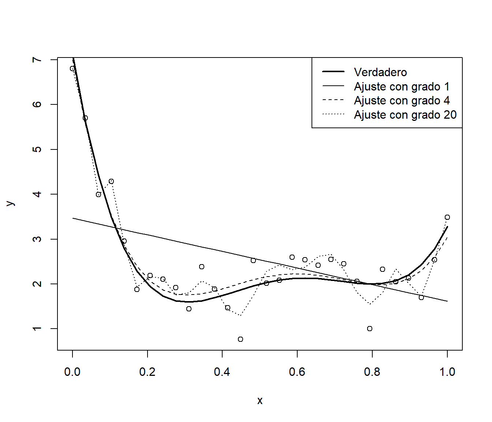
Figura 7.2: Muestra (simulada) y ajustes polinómicos con distinta complejidad.
Al aumentar la complejidad se consigue un mejor ajuste a los datos de entrenamiento (Figura 7.2), a costa de un incremento de la variabilidad de las predicciones, lo que puede empeorar el comportamiento del modelo con datos distintos de los observados. Si calculamos medidas de bondad de ajuste (MSE, \(R^2\)) se obtienen mejores resultados al aumentar la complejidad (Tabla 7.1):
| \(MSE\) | \(R^2\) | \(R^2_{adj}\) | |
|---|---|---|---|
fit1 |
1.22 | 0.20 | 0.17 |
fit2 |
0.19 | 0.87 | 0.85 |
fit3 |
0.07 | 0.95 | 0.84 |
Pero si generamos nuevas respuestas del mismo proceso (predecimos), la precisión del modelo más complejo empeora considerablemente (Figura 7.3):
y.new <- mu + rnorm(n, 0, sd)
plot(x, y)
points(x, y.new, pch = 2)
lines(x, mu, lwd = 2)
lines(x, fitted(fit1))
lines(x, fitted(fit2), lty = 2)
lines(x, fitted(fit3), lty = 3)
leyenda <- c("Verdadero", "Muestra", "Ajuste con grado 1",
"Ajuste con grado 4", "Ajuste con grado 20", "Nuevas observaciones")
legend("topright", legend = leyenda, lty = c(1, NA, 1, 2, 3, NA),
lwd = c(2, NA, 1, 1, 1, NA), pch = c(NA, 1, NA, NA, NA, 2))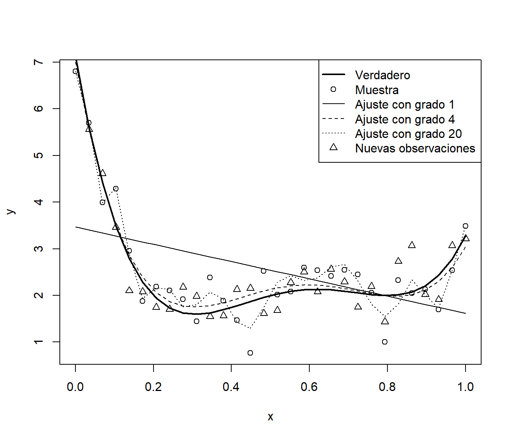
Figura 7.3: Muestra con ajustes polinómicos con distinta complejidad y nuevas observaciones.
MSEP <- sapply(list(fit1 = fit1, fit2 = fit2, fit3 = fit3),
function(x) mean((y.new - fitted(x))^2))
MSEP## fit1 fit2 fit3
## 1.4983208 0.1711238 0.2621064Repitiendo la simulación 100 veces variando el grado del polinomio de 1 a 20 y evaluando la precisión tanto en la muestra de ajuste como en un nuevo conjunto de datos, obtenemos la Figura 7.4: los errores de entrenamiento disminuyen al aumentar la complejidad, pero los errores de predicción en nuevas observaciones inicialmente disminuyen, alcanzan un mínimo (línea vertical discontinua, modelo de grado 4) y después aumentan. A la izquierda de esa línea habría infraajuste (mayor sesgo, menor varianza) y a la derecha, sobreajuste (menor sesgo, mayor varianza).
nsim <- 100
set.seed(1)
grado.max <- 20
grados <- seq_len(grado.max)
# Simulación, ajustes y errores cuadráticos
mse <- mse.new <- matrix(nrow = grado.max, ncol = nsim)
for(i in seq_len(nsim)) {
y <- mu + rnorm(n, 0, sd)
y.new <- mu + rnorm(n, 0, sd)
for (grado in grados) {
fit <- lm(y ~ poly(x, grado))
mse[grado, i] <- mean(residuals(fit)^2)
mse.new[grado, i] <- mean((y.new - fitted(fit))^2)
}
}
# Representación errores simulaciones
matplot(grados, mse, type = "l", col = "lightgray", lty = 1,
ylim = c(0, 2), xlab = "Grado del polinomio (complejidad)",
ylab = "Error cuadrático medio")
matlines(grados, mse.new, type = "l", lty = 2, col = "lightgray")
# Errores globales
precision <- rowMeans(mse)
precision.new <- rowMeans(mse.new)
lines(grados, precision, lwd = 2)
lines(grados, precision.new, lty = 2, lwd = 2)
abline(h = sd^2, lty = 3); abline(v = 4, lty = 3)
legend("topright", lty = c(1, 2),
legend = c("Muestras", "Nuevas observaciones"))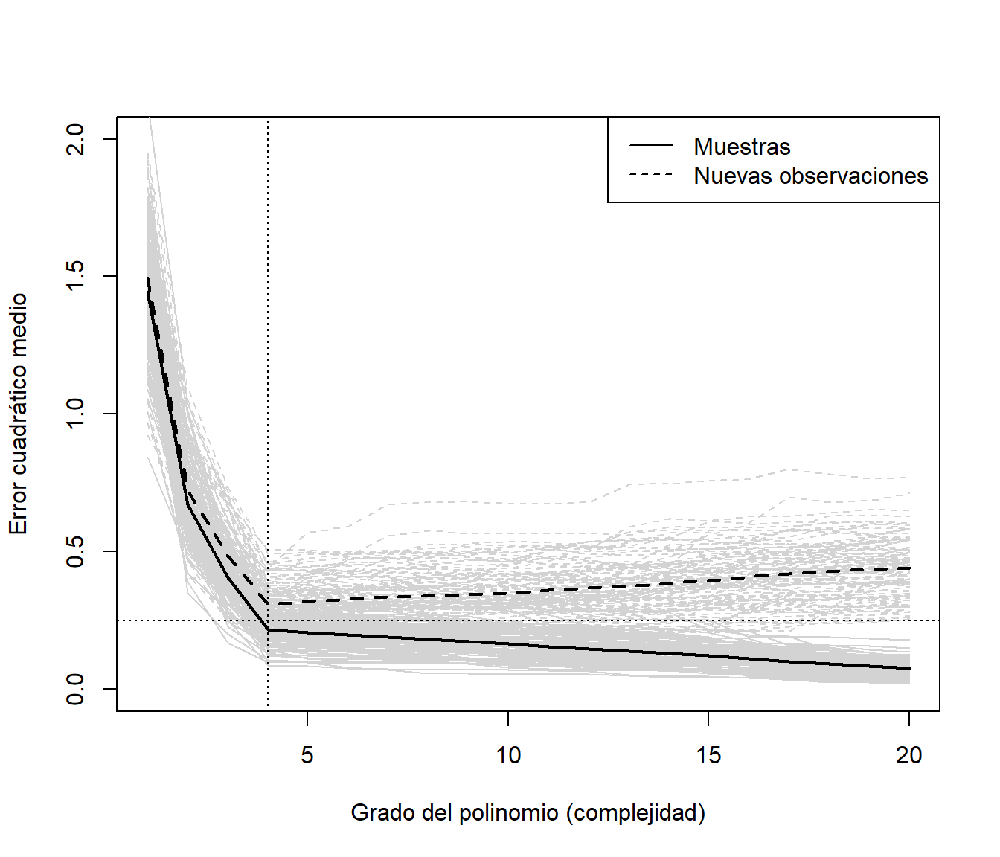
Figura 7.4: Precisiones (errores cuadráticos medios) de ajustes polinómicos en las muestras empleadas en el ajuste y en nuevas observaciones.
En general, al aumentar la complejidad disminuye el sesgo y aumenta la varianza (y viceversa): es el compromiso entre sesgo y varianza (bias-variance tradeoff, Figura 7.5). La recomendación es seleccionar los hiperparámetros tratando de equilibrar ambos.
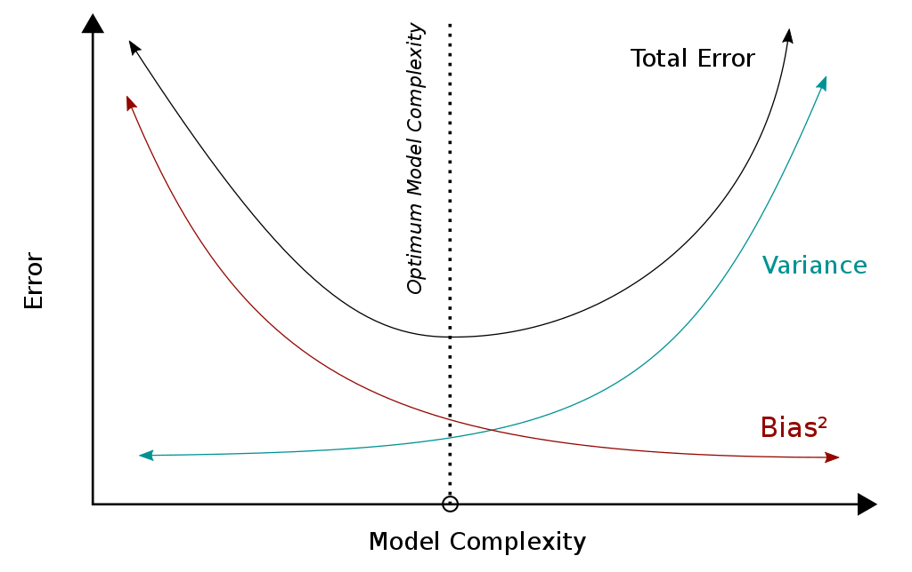
Figura 7.5: Equilibrio entre sesgo y varianza (Fuente: Wikimedia Commons).
7.1.3.2 Datos de entrenamiento y datos de test
Si el número de observaciones no es muy grande, se puede entrenar el modelo con todos los datos y emplear técnicas de remuestreo para evaluar la precisión (validación cruzada o bootstrap). Si el número de observaciones es grande, se suele particionar la base de datos en 2 (o 3) conjuntos disjuntos: entrenamiento (para construir los modelos) y test (para evaluar el rendimiento; los errores en esta muestra aproximan lo que ocurriría con nuevas observaciones). Típicamente se selecciona al azar un 80% para entrenamiento y un 20% para test.
Como ejemplo consideraremos el conjunto de datos Boston del paquete MASS, con la valoración de viviendas (medv) y el porcentaje de población con “menor estatus” (lstat) en los suburbios de Boston:
data(Boston, package = "MASS")
set.seed(2)
nobs <- nrow(Boston)
itrain <- sample(nobs, round(0.8 * nobs))
train <- Boston[itrain, ]
test <- Boston[-itrain, ]Análisis descriptivo básico de la muestra de entrenamiento:
## 'data.frame': 405 obs. of 14 variables:
## $ crim : num 0.0615 6.6549 0.0467 0.5341 18.0846 ...
## $ zn : num 0 0 80 20 0 0 20 80 0 95 ...
## $ indus : num 5.19 18.1 1.52 3.97 18.1 18.1 6.96 2.01 18.1 2.68 ...
## $ chas : int 0 0 0 0 0 0 0 0 0 0 ...
## $ nox : num 0.515 0.713 0.404 0.647 0.679 ...
## $ rm : num 5.97 6.32 7.11 7.52 6.43 ...
## $ age : num 58.5 83 36.6 89.4 100 82.5 58.7 29.7 65.4 33.2 ...
## $ dis : num 4.81 2.73 7.31 2.14 1.83 ...
## $ rad : int 5 24 2 5 24 24 3 4 24 4 ...
## $ tax : num 224 666 329 264 666 666 223 280 666 224 ...
## $ ptratio: num 20.2 20.2 12.6 13 20.2 20.2 18.6 17 20.2 14.7 ...
## $ black : num 396.9 396.9 354.3 388.4 27.2 ...
## $ lstat : num 9.29 13.99 8.61 7.26 29.05 ...
## $ medv : num 18.7 19.5 30.3 43.1 7.2 23.2 24.4 24.5 21.4 48.5 ...## crim zn indus chas
## Min. : 0.00632 Min. : 0.00 Min. : 0.46 Min. :0.00000
## 1st Qu.: 0.07151 1st Qu.: 0.00 1st Qu.: 4.95 1st Qu.:0.00000
## Median : 0.21977 Median : 0.00 Median : 8.56 Median :0.00000
## Mean : 3.36920 Mean : 11.69 Mean :10.91 Mean :0.06914
## 3rd Qu.: 3.47428 3rd Qu.: 18.00 3rd Qu.:18.10 3rd Qu.:0.00000
## Max. :88.97620 Max. :100.00 Max. :27.74 Max. :1.00000
## nox rm age dis
## Min. :0.3890 Min. :3.561 Min. : 2.90 Min. : 1.137
## 1st Qu.:0.4480 1st Qu.:5.895 1st Qu.: 42.30 1st Qu.: 2.122
## Median :0.5240 Median :6.223 Median : 74.30 Median : 3.317
## Mean :0.5517 Mean :6.309 Mean : 67.25 Mean : 3.835
## 3rd Qu.:0.6240 3rd Qu.:6.635 3rd Qu.: 93.90 3rd Qu.: 5.245
## Max. :0.8710 Max. :8.780 Max. :100.00 Max. :12.127
## rad tax ptratio black
## Min. : 1.000 Min. :187.0 Min. :12.60 Min. : 0.32
## 1st Qu.: 4.000 1st Qu.:276.0 1st Qu.:17.00 1st Qu.:377.07
## Median : 5.000 Median :313.0 Median :18.70 Median :392.23
## Mean : 9.306 Mean :400.9 Mean :18.37 Mean :358.58
## 3rd Qu.:24.000 3rd Qu.:666.0 3rd Qu.:20.20 3rd Qu.:396.90
## Max. :24.000 Max. :711.0 Max. :22.00 Max. :396.90
## lstat medv
## Min. : 1.92 Min. : 5.00
## 1st Qu.: 6.78 1st Qu.:17.20
## Median :10.74 Median :21.60
## Mean :12.39 Mean :22.92
## 3rd Qu.:16.44 3rd Qu.:26.40
## Max. :37.97 Max. :50.00par(mfrow = c(1, 3))
plot(density(train[, "medv"]), main = "Densidad")
boxplot(train$medv, main = "Boxplot")
vioplot::vioplot(train$medv, main = "Violín")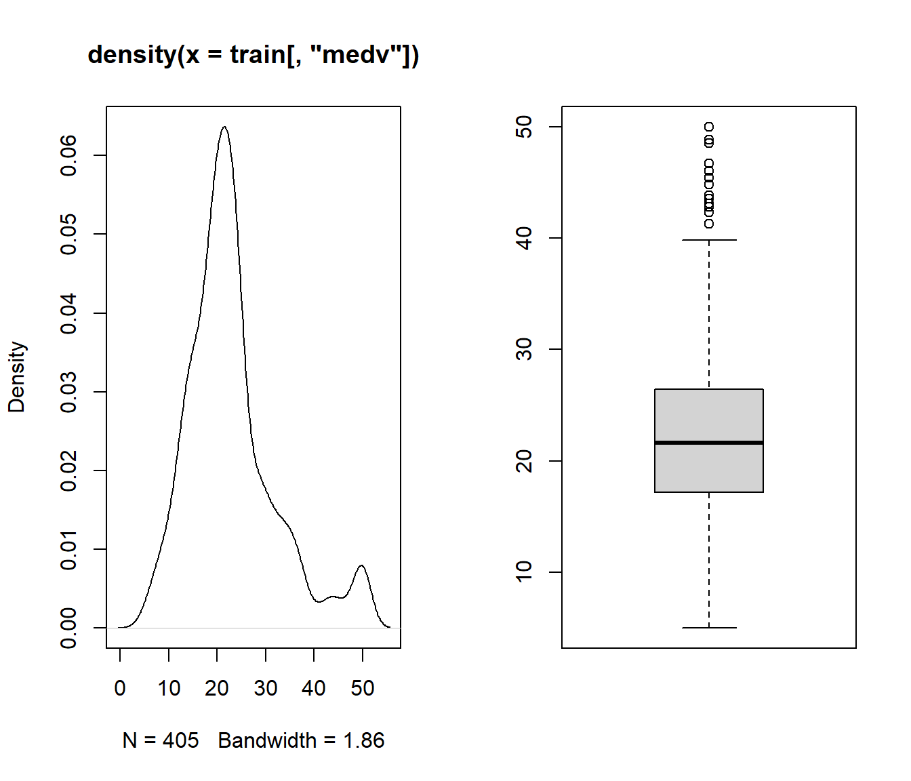
Para explorar las relaciones entre variables numéricas podemos representar la matriz de correlaciones con GGally::ggpairs():
library(GGally)
# solo se visualizan las variables de la posición (columna) 7 a 14
ggpairs(train, columns = 7:14)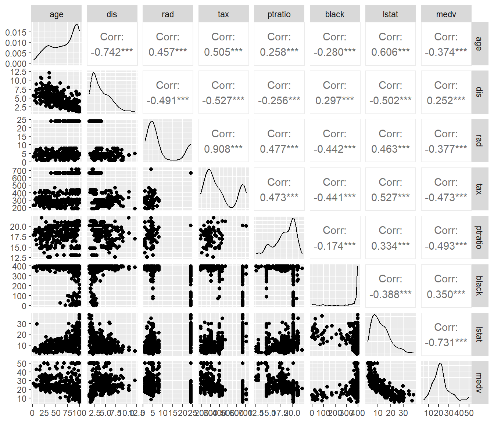
# Alternativas clásicas:
pairs(train[, 7:14])
mcor <- cor(train)
round(mcor, 2)
library(corrplot)
corrplot(mcor)Los datos de test deben utilizarse exclusivamente para evaluar el rendimiento final de los modelos, nunca para seleccionar hiperparámetros. Para esto último hay varias estrategias habituales:
Partición entrenamiento-validación-test: la muestra se divide en tres subconjuntos (por ejemplo 70%-15%-15%). Los hiperparámetros se seleccionan con la muestra de validación y el modelo final se evalúa una única vez sobre el test.
Validación cruzada (cross-validation): los datos de entrenamiento se reutilizan mediante remuestreo. En la validación cruzada k-fold, los datos se dividen en k bloques disjuntos; en cada iteración uno actúa como validación y los k-1 restantes como entrenamiento, repitiendo el proceso k veces.
Validación cruzada dejando una observación fuera (leave-one-out, LOOCV): caso particular de k-fold con tantos bloques como observaciones. Aprovecha al máximo los datos, pero puede ser costosa computacionalmente y dar estimaciones con elevada varianza.
Bootstrap: se generan remuestras con reemplazamiento; el modelo se ajusta en cada una y se evalúa sobre las observaciones no seleccionadas (out-of-bag).
En el caso de series temporales no es adecuado emplear particiones aleatorias, ya que se rompería la dependencia temporal: se emplean esquemas que respetan el orden cronológico (bloques temporales, o rolling forecasting/time series cross-validation, reentrenando sucesivamente con observaciones pasadas para predecir valores futuros; ver Capítulo 5 y, para más detalle, la Sección 5.10 de Forecasting: Principles and Practice de Hyndman y Athanasopoulos).
7.1.3.3 Selección de hiperparámetros mediante validación cruzada
Continuando con el ejemplo anterior, empleemos regresión polinómica para explicar la valoración de las viviendas a partir del estatus de los residentes (Figura 7.6), considerando de nuevo el grado del polinomio como hiperparámetro:
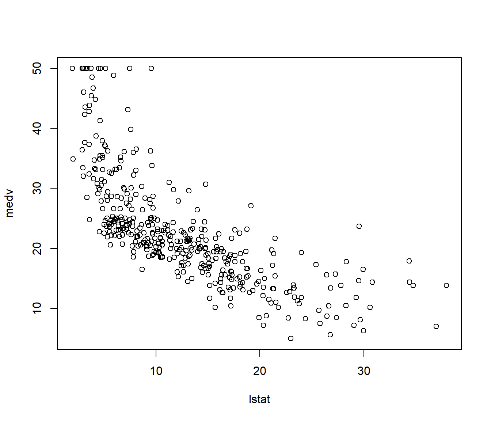
Figura 7.6: Valoración de las viviendas (medv) frente al porcentaje de población con menor estatus (lstat).
##
## Call:
## lm(formula = formula, data = train)
##
## Coefficients:
## (Intercept) lstat
## 34.7024 -0.9512##
## Call:
## lm(formula = formula, data = train)
##
## Residuals:
## Min 1Q Median 3Q Max
## -9.974 -4.133 -1.353 2.081 24.363
##
## Coefficients:
## Estimate Std. Error t value Pr(>|t|)
## (Intercept) 34.70241 0.62997 55.09 <2e-16 ***
## lstat -0.95125 0.04419 -21.53 <2e-16 ***
## ---
## Signif. codes: 0 '***' 0.001 '**' 0.01 '*' 0.05 '.' 0.1 ' ' 1
##
## Residual standard error: 6.271 on 403 degrees of freedom
## Multiple R-squared: 0.5349, Adjusted R-squared: 0.5337
## F-statistic: 463.5 on 1 and 403 DF, p-value: < 2.2e-16El ajuste lineal simple no es del todo adecuado (Figura 7.7), lo que motiva probar con polinomios de mayor grado:
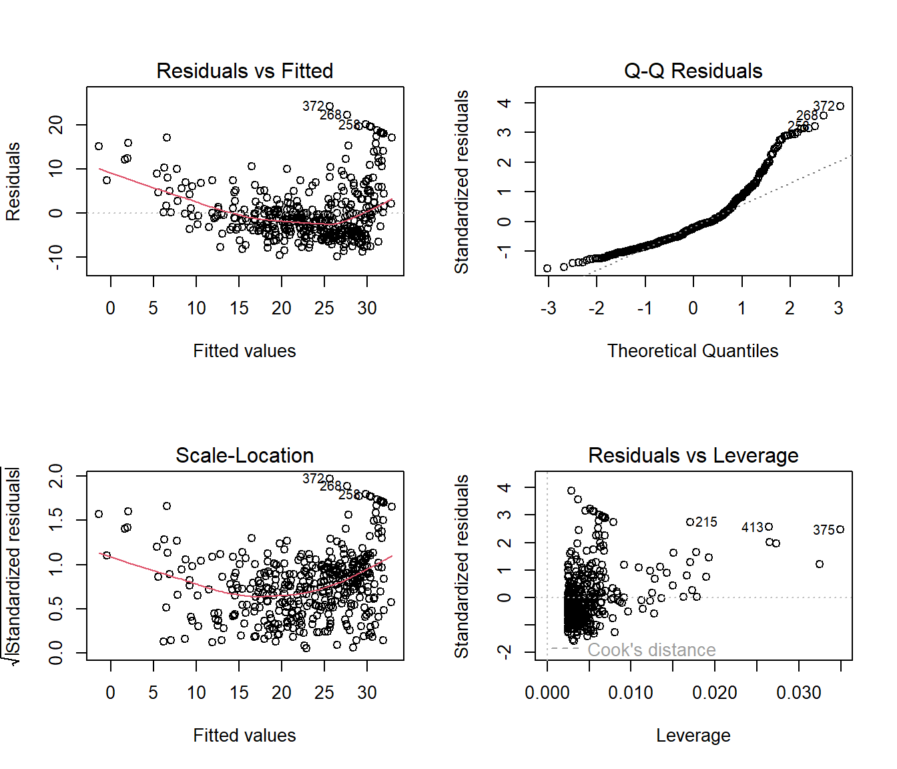
Figura 7.7: Gráficos de diagnóstico del modelo lineal simple.
En el caso de regresión lineal múltiple (y otros predictores lineales) se pueden obtener fácilmente las predicciones eliminando una observación a partir del ajuste con todos los datos (ver ?rstandard), evitando así ajustar el modelo tantas veces como observaciones:
cv.lm <- function(formula, datos) {
modelo <- lm(formula, datos)
return(rstandard(modelo, type = "predictive"))
}
res.cv2 <- cv.lm(medv ~ poly(lstat, 2), train)
res.cv4 <- cv.lm(medv ~ poly(lstat, 4), train)
res.cv5 <- cv.lm(medv ~ poly(lstat, 5), train) # Óptimo con 5 grados
res.cv6 <- cv.lm(medv ~ poly(lstat, 6), train)
c(mean(res.cv2^2), mean(res.cv4^2), mean(res.cv5^2), mean(res.cv6^2))## [1] 30.88877 29.06375 28.20607 28.38612Calculamos el error cuadrático medio de validación cruzada para cada grado del polinomio y seleccionamos el que lo minimiza (Figura 7.8):
grado.max <- 10
grados <- seq_len(grado.max)
cv.mse <- cv.mse.sd <- numeric(grado.max)
for (grado in grados) {
cv.res <- cv.lm(medv ~ poly(lstat, grado), train)
se <- cv.res^2
cv.mse[grado] <- mean(se)
cv.mse.sd[grado] <- sd(se) / sqrt(length(se))
}
plot(grados, cv.mse, ylim = c(25, 45), xlab = "Grado del polinomio")
imin.mse <- which.min(cv.mse)
grado.min <- grados[imin.mse]
points(grado.min, cv.mse[imin.mse], pch = 16)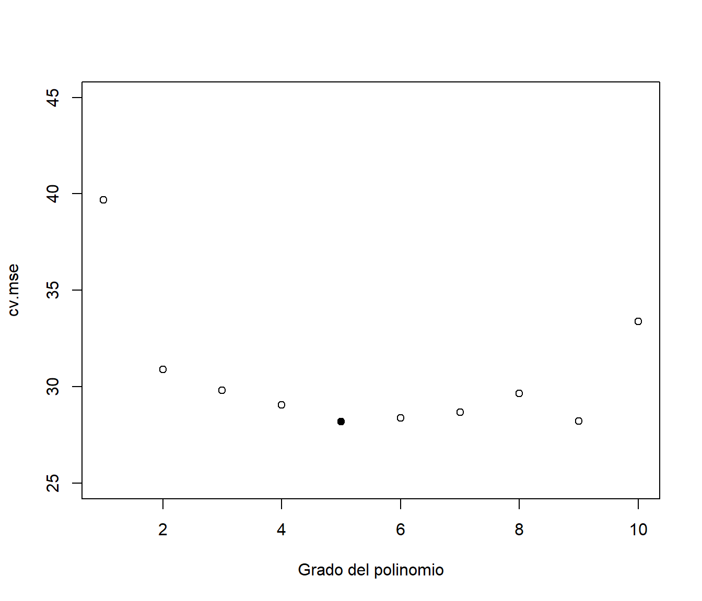
Figura 7.8: Error cuadrático medio de validación cruzada según el grado del polinomio (complejidad).
## [1] 5En lugar de emplear el valor óptimo del hiperparámetro, Breiman et al. (1984) propusieron la regla de “un error estándar” (one-standard-error rule): dado que las estimaciones de precisión presentan variabilidad, se selecciona el modelo más simple cuya precisión esté dentro de un error estándar de la del modelo óptimo (Figura 7.9):
plot(grados, cv.mse, ylim = c(25, 45), xlab = "Grado del polinomio")
segments(grados, cv.mse - cv.mse.sd, grados, cv.mse + cv.mse.sd)
upper.cv.mse <- cv.mse[imin.mse] + cv.mse.sd[imin.mse]
abline(h = upper.cv.mse, lty = 2)
imin.1se <- min(which(cv.mse <= upper.cv.mse))
grado.1se <- grados[imin.1se]
points(grado.1se, cv.mse[imin.1se], pch = 16)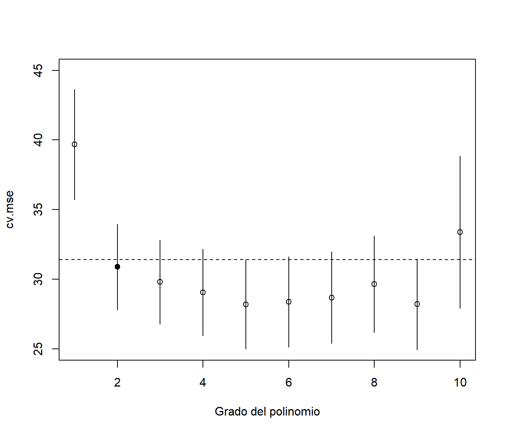
Figura 7.9: Selección del grado del polinomio mediante validación cruzada: valor óptimo y criterio de un error estándar (punto sólido).
## [1] 2plot(medv ~ lstat, data = train)
fit.min <- lm(medv ~ poly(lstat, grado.min), train)
fit.1se <- lm(medv ~ poly(lstat, grado.1se), train)
newdata <- data.frame(lstat = seq(0, 40, len = 100))
lines(newdata$lstat, predict(fit.min, newdata = newdata), lwd = 3)
lines(newdata$lstat, predict(fit.1se, newdata = newdata),
lty = 2, col = 2, lwd = 3)
legend("topright", legend = c(paste("Grado óptimo:", grado.min),
paste("oneSE rule:", grado.1se)), lty = c(1, 2))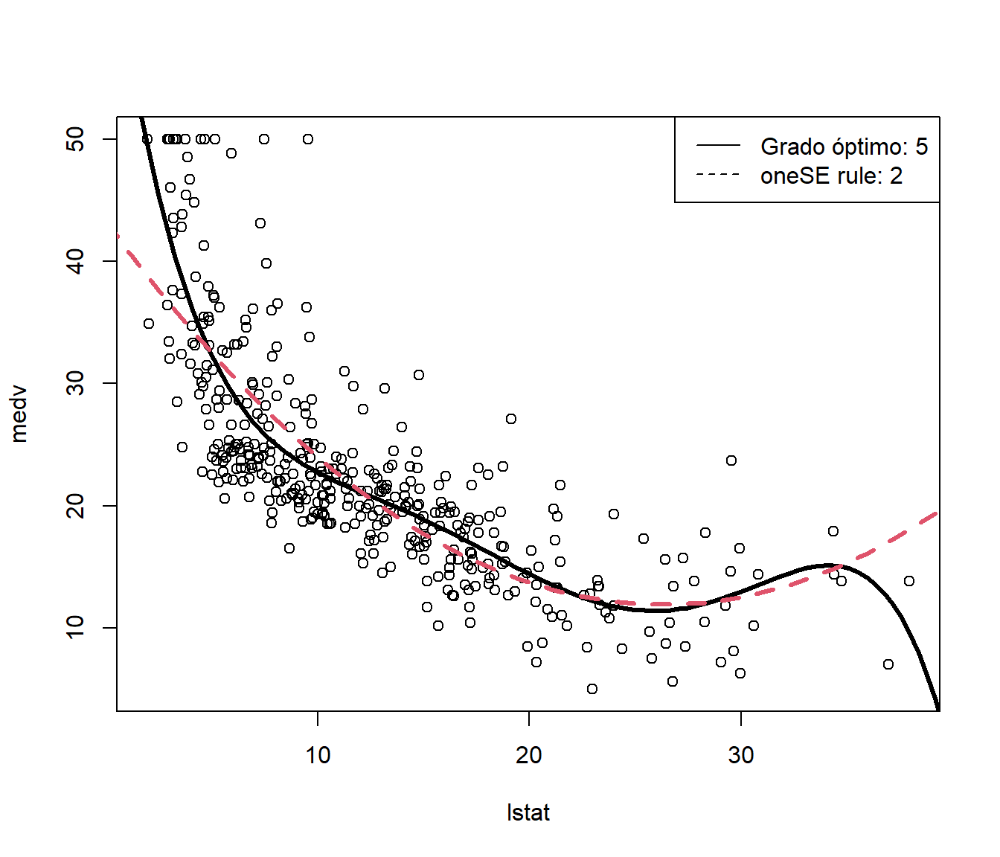
Figura 7.10: Ajuste de los modelos finales: valor óptimo (línea continua) y criterio de un error estándar (línea discontinua).
Ejercicio 7.1 Particiona la muestra Boston en datos de entrenamiento (70%), validación (15%) y test (15%), para entrenar los modelos polinómicos, seleccionar el grado óptimo (el hiperparámetro) y evaluar las predicciones del modelo final. Puede ser de utilidad:
Ejercicio 7.2 Una alternativa a la partición clásica en entrenamiento y validación es emplear bootstrap para estimar el error de predicción: se genera una remuestra bootstrap a partir del entrenamiento, se ajusta el modelo sobre ella y se evalúa el error en las observaciones no seleccionadas (out-of-bag, OOB). Trabajando de nuevo con Boston (medv frente a lstat), realiza el ajuste empleando una única muestra bootstrap y evalúa las predicciones en la muestra de test. Puede ser de utilidad:
data(Boston, package = "MASS")
set.seed(1)
nobs <- nrow(Boston)
itrain <- sample(nobs, size = floor(0.8 * nobs))
train <- Boston[itrain, ]
test <- Boston[-itrain, ]
# Remuestra bootstrap (con reemplazamiento)
# de los índices de entrenamiento
set.seed(1)
ntrain <- nrow(train)
itrain_boot <- sample(seq_len(ntrain), replace = TRUE)
train_boot <- train[itrain_boot, ]
# Observaciones "out of bag" (no seleccionadas en la remuestra)
oob <- train[-itrain_boot, ]7.1.3.4 Evaluación de un método de regresión
Para estudiar la precisión de las predicciones se evalúa el modelo en el conjunto de test y se comparan las predicciones frente a los valores reales. En un gráfico de dispersión de observaciones frente a predicciones (Figura 7.11), los puntos deberían estar en torno a la recta \(y=x\):
obs <- test$medv
pred <- predict(fit.min, newdata = test)
plot(pred, obs, xlab = "Predicción", ylab = "Observado")
abline(a = 0, b = 1)
res <- lm(obs ~ pred)
abline(res, lty = 2)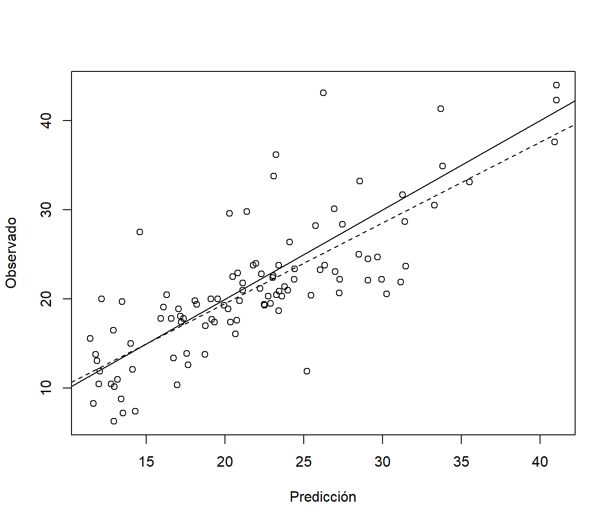
Figura 7.11: Observaciones frente a predicciones (identidad, línea continua, y ajuste lineal, línea discontinua).
También es habitual calcular medidas de error, como las que proporciona caret::postResample():
## RMSE Rsquared MAE
## 4.8529138 0.6234068 3.6652591## [1] 4.852914## [1] 3.665259Además de las medidas de error habituales, postResample() calcula un pseudo R-cuadrado basado en el cuadrado de la correlación entre predicciones y observaciones, que no tiene en cuenta el sesgo (obtendríamos el mismo valor si desplazamos las predicciones sumando una constante). Una alternativa preferible sería:
\[\tilde R^2 = 1 - \frac{\sum_{i=1}^n(y_i - \hat y_i)^2}{\sum_{i=1}^n(y_i - \bar y)^2}\]
(equivalente al coeficiente de determinación ajustado, pero sin depender de las hipótesis estructurales del modelo), implementada junto con otras medidas de error en la función accuracy() del paquete mpae (el mismo paquete de los autores del libro de referencia de esta sección):
library(mpae)
accuracy <- function(pred, obs, na.rm = FALSE,
tol = sqrt(.Machine$double.eps)) {
err <- obs - pred # Errores
if (na.rm) {
is.a <- !is.na(err)
err <- err[is.a]
obs <- obs[is.a]
}
perr <- 100 * err / pmax(obs, tol) # Errores porcentuales
return(c(
me = mean(err), # Error medio
rmse = sqrt(mean(err^2)), # Raíz del error cuadrático medio
mae = mean(abs(err)), # Error absoluto medio
mpe = mean(perr), # Error porcentual medio
mape = mean(abs(perr)), # Error porcentual absoluto medio
# Pseudo R-cuadrado
r.squared = 1 - sum(err^2) / sum((obs - mean(obs))^2)
))
}
accu.min <- accuracy(pred, obs)
accu.min## me rmse mae mpe mape r.squared
## -0.6932010 4.8529138 3.6652591 -8.7126633 19.9985572 0.6086314## me rmse mae mpe mape r.squared
## -0.863974 5.216321 4.077066 -9.109356 21.570488 0.547822En este caso, el ajuste polinómico con el grado óptimo explicaría un 60.9 % de la variabilidad de la respuesta en nuevas observaciones (un 6.1 % más que el modelo seleccionado con el criterio de un error estándar).
7.1.4 Clasificación
Todo lo anterior se ilustró con un problema de regresión (medv es numérica), ajustado al modelo general (7.1). Cuando la respuesta es categórica hablamos de clasificación: ese modelo no es directamente aplicable a variables categóricas, aunque muchos métodos (como la regresión logística) lo emplean para una variable auxiliar numérica que después se transforma a probabilidades mediante la función logística. Veamos un ejemplo breve, tanto con dos clases (clasificación binaria) como con más de dos (multiclase), empleando el conjunto de datos iris (tres especies de lirio a partir de las medidas de sépalos y pétalos).
7.1.4.1 Ejemplo: clasificación binaria y multiclase con KNN
El método de los k-vecinos más próximos (k-nearest neighbors, KNN) es uno de los más simples e intuitivos: para clasificar una nueva observación, busca las \(k\) observaciones de entrenamiento más cercanas (según alguna distancia, típicamente la euclídea) y le asigna la clase mayoritaria entre ellas.
Para el caso binario nos quedamos únicamente con dos de las tres especies:
data(iris)
iris2 <- droplevels(subset(iris, Species != "setosa"))
set.seed(1)
nobs <- nrow(iris2)
itrain <- sample(nobs, round(0.8 * nobs))
train2 <- iris2[itrain, ]
test2 <- iris2[-itrain, ]
library(class)
pred2 <- knn(train = train2[, c("Petal.Length", "Petal.Width")],
test = test2[, c("Petal.Length", "Petal.Width")],
cl = train2$Species, k = 5)
table(Predicho = pred2, Real = test2$Species)## Real
## Predicho versicolor virginica
## versicolor 11 0
## virginica 0 9## [1] 1Lo interesante de KNN es que se extiende de forma directa al caso multiclase: la votación por mayoría entre los \(k\) vecinos funciona igual sea cual sea el número de clases, sin necesidad de ningún truco adicional. Repitamos el ejemplo con las tres especies:
set.seed(1)
nobs <- nrow(iris)
itrain <- sample(nobs, round(0.8 * nobs))
train3 <- iris[itrain, ]
test3 <- iris[-itrain, ]
pred3 <- knn(train = train3[, c("Petal.Length", "Petal.Width")],
test = test3[, c("Petal.Length", "Petal.Width")],
cl = train3$Species, k = 5)
table(Predicho = pred3, Real = test3$Species)## Real
## Predicho setosa versicolor virginica
## setosa 11 0 0
## versicolor 0 12 1
## virginica 0 0 6## [1] 0.9666667No todos los métodos son tan flexibles: muchos clasificadores habituales (regresión logística, máquinas de soporte vectorial…) son binarios por construcción y necesitan una estrategia adicional para abordar más de dos clases. Las dos más empleadas son:
- Uno contra uno (one-vs-one, OVO): se entrena un clasificador binario para cada posible par de clases (\(\binom{K}{2}\) modelos con \(K\) clases) y se decide por votación mayoritaria entre todos ellos.
- Uno contra el resto (one-vs-all/one-vs-rest, OVA/OVR): se entrena un clasificador binario por cada clase frente a todas las demás juntas (\(K\) modelos), y se asigna la clase cuyo modelo dé mayor confianza.
Antes de ver cómo resuelve esto un paquete concreto, conviene visualizar qué observaciones entran realmente en cada uno de los clasificadores binarios que componen cada estrategia: en OvR, cada uno de los \(K\) clasificadores ve todas las observaciones (solo cambia qué especie se toma como positiva); en OvO, cada uno de los \(\binom{K}{2}\) clasificadores ve únicamente las observaciones de las dos especies implicadas:
lev <- levels(train3$Species)
col_clase <- c("#2a78d6", "#eb6834", "#1baf7a")
names(col_clase) <- lev
col_resto <- "grey80"
bord_resto <- "grey55"
xlim <- range(train3$Petal.Length)
ylim <- range(train3$Petal.Width)
layout(rbind(1, 2, c(3, 4, 5), 6, c(7, 8, 9)),
heights = c(0.09, 0.055, 0.40, 0.055, 0.40))
titulo <- function(txt) {
par(mar = c(0, 1, 0, 0))
plot.new()
text(0, 0.5, txt, adj = c(0, 0.5), cex = 1.15, font = 2)
}
par(mar = c(0, 0, 0, 0))
plot.new()
legend("center", legend = c(lev, "Resto"),
pt.bg = c(col_clase, col_resto), pch = 21, pt.cex = 1.6,
col = c(rep("black", 3), bord_resto),
horiz = TRUE, bty = "n", cex = 1.05, text.width = 0.16)
titulo("Uno contra el resto (OvR / OvA): un clasificador por especie")
for (especie in lev) {
par(mar = c(4, 4, 2.5, 1))
es_foco <- train3$Species == especie
plot(train3$Petal.Length[!es_foco], train3$Petal.Width[!es_foco],
xlim = xlim, ylim = ylim, pch = 21, cex = 1, col = bord_resto,
bg = col_resto, xlab = "Petal.Length", ylab = "Petal.Width",
main = paste0(especie, " vs. Resto"))
points(train3$Petal.Length[es_foco], train3$Petal.Width[es_foco],
pch = 21, cex = 1.3, col = "black", bg = col_clase[especie])
}
titulo("Uno contra uno (OvO): un clasificador por cada par de especies")
pares <- combn(lev, 2, simplify = FALSE)
for (par_esp in pares) {
par(mar = c(4, 4, 2.5, 1))
sel <- train3$Species %in% par_esp
datos_par <- train3[sel, ]
plot(datos_par$Petal.Length, datos_par$Petal.Width,
xlim = xlim, ylim = ylim, pch = 21, cex = 1.3, col = "black",
bg = col_clase[as.character(datos_par$Species)],
xlab = "Petal.Length", ylab = "Petal.Width",
main = paste(par_esp, collapse = " vs. "))
}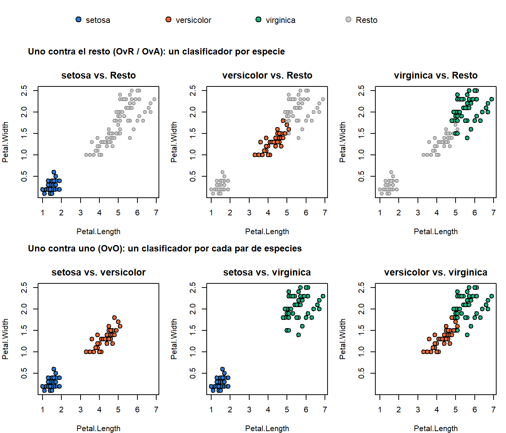
Figura 7.12: Qué observaciones entran en cada clasificador binario: arriba, uno contra el resto (OvR/OvA); abajo, uno contra uno (OvO).
Puede apreciarse que OvO necesita más clasificadores conforme crece \(K\) (\(\binom{K}{2}\) frente a \(K\)), pero cada uno se entrena con un problema más sencillo: menos observaciones, y una frontera potencialmente más clara al enfrentar solo dos especies a la vez en lugar de una especie contra el resto.
Alternativamente, la misma figura puede construirse con ggplot2/patchwork (código no evaluado; se deja aquí por si se prefiere retomar esta versión más adelante):
library(ggplot2)
library(patchwork)
col_clase <- c(setosa = "#2a78d6", versicolor = "#eb6834",
virginica = "#1baf7a", Resto = "grey80")
lev <- levels(train3$Species)
xlim <- range(train3$Petal.Length)
ylim <- range(train3$Petal.Width)
ovr <- do.call(rbind, lapply(lev, function(especie) {
d <- train3
d$panel <- paste0(especie, " vs. Resto")
d$grupo <- ifelse(d$Species == especie, especie, "Resto")
d
}))
ovr$panel <- factor(ovr$panel, levels = paste0(lev, " vs. Resto"))
ovr$grupo <- factor(ovr$grupo, levels = c(lev, "Resto"))
ovr <- ovr[order(ovr$grupo != "Resto"), ]
pares <- combn(lev, 2, simplify = FALSE)
ovo <- do.call(rbind, lapply(pares, function(par_esp) {
d <- train3[train3$Species %in% par_esp, ]
d$panel <- paste(par_esp, collapse = " vs. ")
d$grupo <- factor(as.character(d$Species), levels = lev)
d
}))
ovo$panel <- factor(ovo$panel,
levels = sapply(pares, paste, collapse = " vs. "))
tema_panel <- theme_minimal(base_size = 12) +
theme(legend.position = "bottom",
strip.text = element_text(face = "bold"),
panel.grid.minor = element_blank(),
plot.title = element_text(face = "bold", size = 12))
p_ovr <- ggplot(ovr, aes(Petal.Length, Petal.Width, fill = grupo)) +
geom_point(shape = 21, color = "black", size = 2.4, stroke = 0.3) +
facet_wrap(~ panel, nrow = 1) +
scale_fill_manual(values = col_clase, name = NULL,
limits = c(lev, "Resto")) +
coord_cartesian(xlim = xlim, ylim = ylim) +
labs(title = "Uno contra el resto (OvR / OvA)") +
tema_panel
p_ovo <- ggplot(ovo, aes(Petal.Length, Petal.Width, fill = grupo)) +
geom_point(shape = 21, color = "black", size = 2.4, stroke = 0.3) +
facet_wrap(~ panel, nrow = 1) +
scale_fill_manual(values = col_clase, name = NULL,
limits = c(lev, "Resto"), drop = FALSE) +
coord_cartesian(xlim = xlim, ylim = ylim) +
labs(title = "Uno contra uno (OvO)") +
tema_panel
(p_ovr / p_ovo) +
plot_layout(guides = "collect") &
theme(legend.position = "bottom")Por ejemplo, e1071 resuelve el caso multiclase de las máquinas de soporte vectorial mediante la estrategia OVO por defecto:
library(e1071)
modelo_ovo <- svm(Species ~ Petal.Length + Petal.Width,
data = train3, kernel = "linear")
pred_ovo <- predict(modelo_ovo, newdata = test3)
table(Predicho = pred_ovo, Real = test3$Species)## Real
## Predicho setosa versicolor virginica
## setosa 11 0 0
## versicolor 0 12 1
## virginica 0 0 6## [1] 0.9666667Como con la regresión, la evaluación (matriz de confusión, precisión, u otras medidas como sensibilidad/especificidad) debe hacerse siempre sobre datos de test no utilizados para entrenar, y los hiperparámetros (aquí, \(k\) o el tipo de kernel) se seleccionarían por validación cruzada (Sección 7.1.3.3) igual que en regresión.
7.1.4.2 La maldición de la dimensionalidad
Los métodos basados en distancias o vecindarios locales, como KNN, se ven especialmente afectados por la llamada maldición de la dimensionalidad (curse of dimensionality): a medida que aumenta el número de predictores \(p\), los datos se vuelven cada vez más dispersos en ese espacio de mayor dimensión, y el concepto de “vecino cercano” deja de ser realmente local.
Una forma sencilla de verlo: para capturar una fracción fija \(r\) del volumen de datos mediante un hipercubo centrado en el punto de interés, el lado necesario de ese hipercubo es \(r^{1/p}\). Cuanto mayor es \(p\), más se acerca ese lado al rango completo de cada variable:
r <- 0.1 # fracción de datos que queremos capturar (10%)
p <- c(1, 2, 5, 10, 20, 50, 100)
lado <- r^(1 / p)
data.frame(p = p, lado_hipercubo = round(lado, 3))## p lado_hipercubo
## 1 1 0.100
## 2 2 0.316
## 3 5 0.631
## 4 10 0.794
## 5 20 0.891
## 6 50 0.955
## 7 100 0.977plot(p, lado, type = "b", ylim = c(0, 1),
xlab = "Número de predictores (p)",
ylab = "Lado del hipercubo necesario")
abline(h = 1, lty = 2)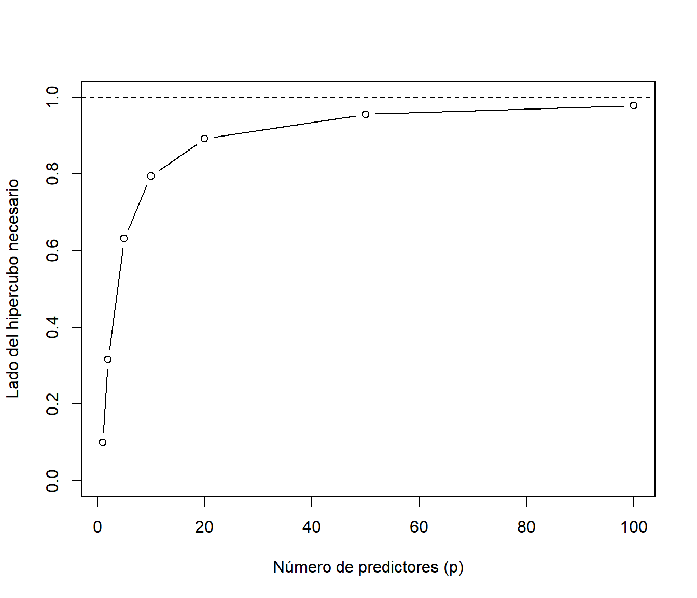
Figura 7.13: Lado del hipercubo necesario para capturar un 10% de los datos, según la dimensión.
Con \(p=1\) basta con recorrer el \(10\%\) del rango de la variable; con \(p=100\) haría falta cubrir prácticamente el rango completo (\(97.7\%\)) en cada predictor para conseguir esos mismos “vecinos”. Es decir, con muchos predictores, los vecinos más próximos dejan de ser realmente próximos, salvo que se disponga de muestras enormes. Esto explica por qué, en dimensión alta, suelen preferirse métodos que no dependen tanto de la localidad (modelos lineales, regularización) o técnicas previas de selección/reducción de variables, que se tratan en el libro completo de referencia.